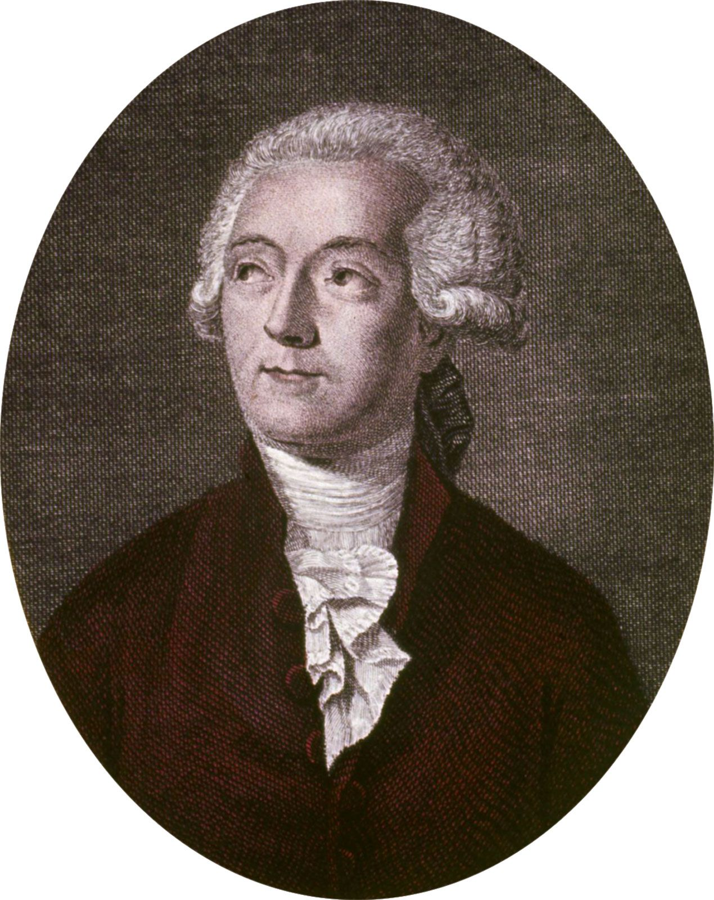
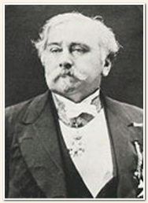
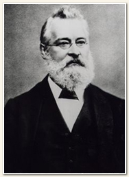
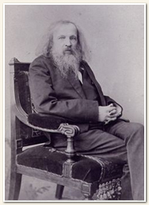
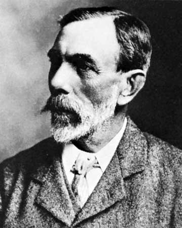
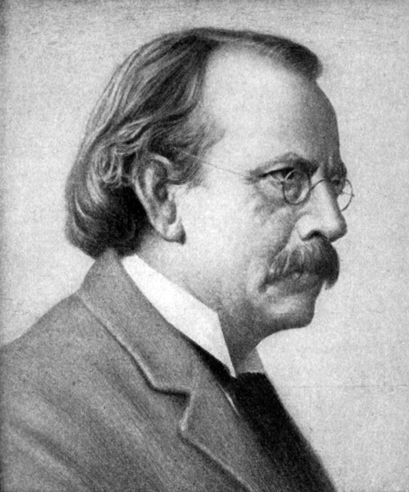
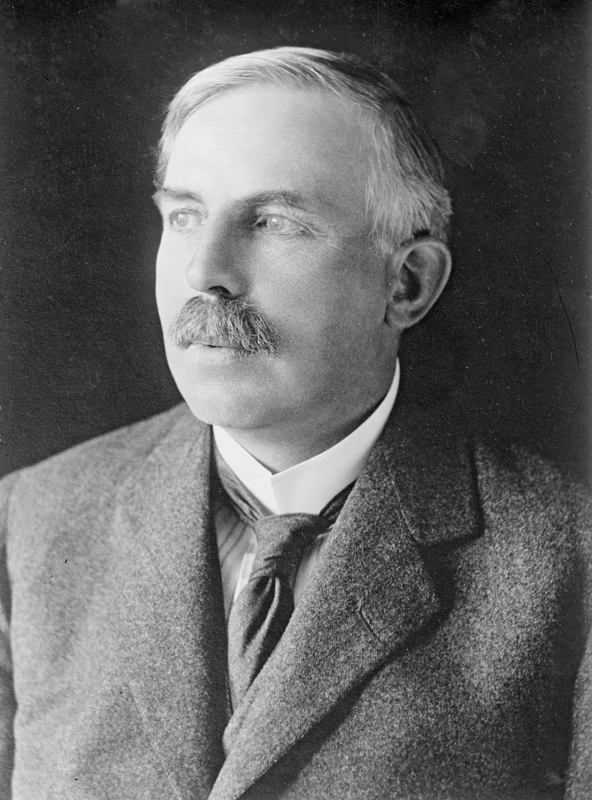
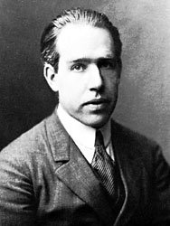
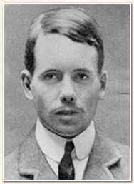
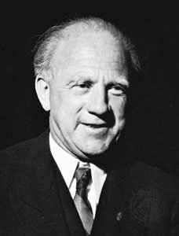

These philosophers were the first to have a general idea of how the universe works at it’s tiniest level. They called these small particles “a tomos” or atoms (which means uncuttable or indivisible). They believed that atoms had the properties of the material they create. For example, they thought that iron atoms were connected with strong hooks, while clay atoms were soft and malleable.
500 BCE - Greek Philosophers Leucippus & Democritus proposed that matter was made out of small particles

1787 - Antoine Lavosier made a list of all the known elements
Antoine Lavosier is famous for creating the law of conservation of mass (which means that no matter what you do to it, the mass of an object will stay the same), but he also attempted to make a table of elements. The table was made up of the 33 known elements at the time, and it was a one-dimensional list. That means that it can’t take up the full potential of a two-dimensional or three-dimensional table. It did not show the similarities between elements at all, so it did not receive much attention.
1862 - Alexandre-Emile Béguyer de Chancourtois put elements around a cylinder according to atomic weight
The elements in this table were in a spiral pattern around a cylinder, and it just so happened that some of the elements that were lined up vertically had the same properties as each other. Even after all of this work, it did not influence other scientists because it was too complicated, and the original paper about the table did not include a diagram! It did not show the similarities between elements very well, so scientists looked to a better solution.
1864 - John Newlands suggested that when elements were in order of atomic weights, the elements that were 8 places above or below the element had similar properties
Newlands created the “law of octaves,” and in his table he left spaces for missing elements, but in his 1866 version that was more widely publicized, he did not include the spaces. That made many scientists dismiss his table, and one, George Carey Foster, sarcastically asked John Newlands if he had tried ordering the elements alphabetically, because any random order would have coincidences. Because of this, the Chemical Society would not publish his paper.
1869 - Dimitri Mendeleev completed the first of his periodic tables
While writing a chemistry textbook, Mendeleev created his first periodic table. It had all of the 63 known elements, arranged according to atomic weight. He left spaces for unknown elements and even predicted new ones and their properties! This was one of the first periodic tables that resembled our current one, and Mendeleev received the Davy award in 1882 for it.
1894 - William Ramsay discovers Argon
Over the next few years, helium, neon, krypton, and xenon are discovered and grouped together as the noble gasses. Because none of the noble gasses really reacted with the other elements (hence the name), some scientists thought that the noble gasses did not belong in the periodic table. These elements had not been predicted before by earlier versions of the table, so it took 6 years of work to put them in the table, where they got a brand new column.
1904 - Joseph John Thompson figured out the mass of the rays in discharge tubes and discovers electrons
After using discharge tubes for over 30 years, J. J. Thompson measured the heat and bendability of the rays, and concluded that they were over 1000x lighter than hydrogen, the lightest element. He knew that there was a fundamental particle making up these rays, and called them “corpuscles,” which we now call “electrons.” He developed a model of the atom that included electrons, with them arranged in rings inside the atom. He thought that elements with similar electron configurations would have similar properties, and he was right.
1909 - Earnest Rutherford hit a thin sheet of gold with alpha particles, and observed the way they were deflected
When he did his experiment, he noticed that most of the alpha particles went straight through the gold, but some were deflected backwards. He concluded that most of an atom is empty space, and that the part of an atom that would stop or deflect an alpha particle is concentrated at a very small point, which Rutherford called the “nucleus”. He also discovered that if you launched alpha particles at nitrogen, it would create hydrogen ions, which he discovered were fundamental particles called protons.
1911 - Niels Bohr figured out the likely positions of electrons around an atom and created orbitals
He made a series of shells around the nucleus and thought that elements that were in the same group of the table would have the same number of electrons in their outer shells. He reasoned that the properties of an element depended on the number of electrons in the outer shell of the atoms. This explains why noble gasses aren’t reactive, their outer shells are filled with electrons! He came to these conclusions based on the properties of elements, not by quantum theory.
1913 - Henry Moseley discovered a fundamental quantity called the atomic number
When he looked at the x-rays of 12 different elements, he discovered that the K-lines were proportional to the position of the element in the table squared, proof that there is a quantity that goes up each time you move elements. The atomic number, as it was first called in 1920, is the number of protons in the nucleus of an element. With this newfound knowledge, scientists predicted how many undiscovered elements there were better than before, instead of just blindly guessing atomic weights. It fixed many problems with arrangement in the periodic table, because you can order the elements by atomic number in a clean and easy fashion.
1927 - Werner Heisenberg discovered that it is impossible to know the position and momentum of a subatomic particle at the same time and created the basis for quantum theory
He discovered that it is impossible to know both the position and momentum of a subatomic particle at the same time, and that the more you know about one of those variables, the harder it is to measure the other. He, along with other scientists, proposed a quantum theory where the positions of electrons are thought of as probabilities. It can be drawn as a cloud, where the likelihood of finding an electron determines the opacity of color in that spot. That is why it is called the “cloud model,” and is the one most used by scientists today.